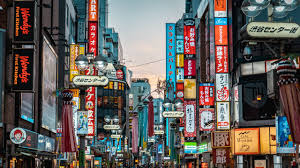

Intro
I am visiting Tokyo for around a week this winter break. I have been here before a few times, so I want to see what suggestions ChatGPT-5.1 can make for my trip. I also have never been at this time around Christmas, so I want to see if there is anything special to do. I want to get specific recommendations from ChatGPT like certain restaurants, shops, etc.

PROMPT: I am visiting Tokyo for a week from 12/15-12/22. Help me think of places to eat, shop, things to do etc. I have been here a few times before, but never at this time. I would like to know if there is specific Christmas things to do too. I am staying in Omotesando.
Here’s a customized Tokyo winter/Christmas travel guide for your trip from Dec 15–22, 2025 based out of Omotesando — including food, shopping, seasonal events, winter illuminations, and fun activities!
🎄 Christmas & Winter-Specific Events in Tokyo (Mid-Dec)
🌟 Illuminations (Free & Iconic)
✨ Omotesando Illuminations Walk down the zelkova-lined avenue for festive lights — beautiful and right near you. (Japan Guide)
✨ OMOHARA Christmas Illumination On the rooftop of Tokyu Plaza Omotesando Harajuku, a cozy illuminated “forest” with festive décor – perfect early evening stroll + pics. (Japan Web Magazine)
✨ Shibuya “Blue Cave” (Ao no Dokutsu) A dazzling tunnel of blue lights near Shibuya – very popular for night walks and photos. (TOKYO APARTMENT INC.)
✨ Marunouchi Illumination Trees along Marunouchi near Tokyo Station glow with champagne-gold lights — great with dinner plans. (Welcome To TOKYO Japan)
✨ Roppongi Midtown / Tokyo Midtown Christmas Galaxy-like LED displays + festive decorations that stretch across the area. (Welcome To TOKYO Japan)
✨ Caretta Shiodome Illumination Light shows synced to music next to Shimbashi. (Pelago)
✨ Tokyo Dome City Winter Illumination Huge glowing display at the amusement park near Suidobashi — especially fun in the evening. (好運日本行（GOOD LUCK TRIP）)
🎁 Christmas Markets & Festive Spots
🇩🇪 ROPPONGI HILLS Christmas Market – German-style market with mulled drinks, sausages, ornaments.
🇯🇵 東京クリスマスマーケット2025 – Central Tokyo Christmas market event (multiple venues/editions around the city).
🇯🇵 AZABUDAI HILLS Christmas Market – Smaller but easy-to-reach market near Kamiyacho.
🛍️ Christmas Market near Meiji Jingu / Shiba Park – lively European-inspired booths and seasonal food (usually until Dec 25). (Reddit)
⭐ Yokohama Red Brick Christmas Market (day trip) – the classic German Christmas market in Yokohama; fun if you want something bigger. (Wikipedia)
💡 Tokyo Christmas/holiday markets usually end around Dec 25, though many winter illuminations continue into January/February. (Reddit)
🍽️ Great Places to Eat (Omotesando / Harajuku)
🍣 Local Favorites & Casual Eats
- Roast Beef Ohno Harajuku Branch – insanely popular roast beef bowls (budget-friendly).
- Gyukatsu Kyoto Katsugyu Harajuku – juicy gyukatsu (fried beef cutlets).
- Gyukatsu Motomura Harajuku Branch – another top-rated gyukatsu spot.
- Tonkatsu Maisen Aoyama – Tokyo tonkatsu classic.
- Kaiten Sushi Ginza Onodera HONTEN – conveyor belt sushi for fun dinner.
🍜 Comfort & Brunch
- Brown Rice Tokyo Omotesando – healthy Japanese lunch/brunch.
- Juan Bowl & Tea Tokyo – cozy bowls & tea.
- bills Omotesando – popular Aussie brunch spot with views.
🍷 Special / Fine Dining
- Omotesando Ukai Tei – top teppanyaki experience (perfect special night).
- CENSU TOKYO – refined Japanese kaiseki tasting.
- Restaurant Hyene – French bistro style.
- JULIA & Noda – highly-rated reservations worth checking.
🥘 Winter Warmers
- Wagyu beef Shabu‑Shabu THE SLICE OMOTESANDO – warm shabu-shabu, great for cold nights.
- Wagyu (Halal) Steak HamBurger & Ramen (5W‑Tokyo 1962) – unique steak/ramen fusion (excellent reviews).
🛍️ Stylish Shopping (Steps from Your Hotel)
🎁 Omotesando Hills – flagship fashion + seasonal pop-ups. 🎁 Cat Street (Harajuku) – quirky boutiques & cafes. 🎁 Takeshita Street – funky Harajuku fashion & sweets. 🎁 Ginza – luxury fashion, flagship stores, and Christmas window displays. (Welcome To TOKYO Japan) 🎁 Shibuya Scramble Square & Shibuya Parco – big shopping + viewpoints.
📅 Activities & Experience Ideas
🎨 Culture & Views
- Meiji Jingu Shrine – peaceful winter visit (beautiful in crisp air).
- Tokyo Tower / Skytree – night views + winter lighting.
- TeamLab Planets / Borderless – immersive digital art.
🎭 Entertainment
- Disney Christmas at Tokyo Disneyland / DisneySea – special Christmas parade & shows (if you want a day trip). (Wikipedia)
- Kabukicho & Golden Gai (Shinjuku) – fun evening bar crawl & nightlife.
☕ Cozy Winter Spots
- Warm cafés with seasonal sweets (e.g., Mont-Blanc, strawberry shortcake).
- Hot spring spa like Oedo Onsen Monogatari (Odaiba) for winter soak.
🧠 Tips for Christmas in Japan
- Christmas Eve (Dec 24) is very popular for reservations (especially dinners).
- Many Christmas markets end on Dec 25 — but illuminations continue into January/February. (Reddit)
- New Year celebrations & shrine visits (hatsumode) begin around Dec 31 – Jan 1 if you stay late.
If you’d like, I can also put together sample daily itineraries (with map links and travel times) for your exact travel week!
PROMPT: Yes can you create an itinerary for different areas each day. For shopping can you also recommend certain Japanese brands or brands that would be cheaper in Japan that a girl in her 20s might like
Amazing timing — Tokyo in mid-December is perfect for walking, food, and illuminations ✨ Below is a 7-day itinerary by area, designed so each day feels cohesive and not rushed, starting from Omotesando. I’ll also weave in shopping stops + specific Japanese brands (especially ones that are cheaper or easier to buy in Japan and popular with women in their 20s).
🗓️ Tokyo 7-Day Area-by-Area Itinerary (Dec 15–22)
Day 1: Omotesando → Harajuku (Easy Arrival Day)
Perfect since you’re staying here
Morning / Afternoon
Walk Omotesando Avenue (flagship architecture is part of the fun)
Omotesando Hills (stylish, not overwhelming)
Coffee stop:
- Koffee Mameya (specialty, very Tokyo)
- Blue Bottle Aoyama
Shopping (Omotesando / Harajuku)
Japanese brands to look for:
- Beams / United Arrows / Journal Standard – higher quality basics & trend pieces (often cheaper than abroad)
- Snidel / Lily Brown / FRAY I.D – feminine, trendy, very popular with Japanese women in their 20s
- Maison Kitsuné Japan exclusives
- Comme des Garçons Play (Japan pricing + exclusives)
- Lowrys Farm / Earth Music & Ecology – affordable everyday pieces
- MUJI flagship (best prices + Japan-only items)
Evening
- Meiji Jingu (quiet, winter air is beautiful)
- Dinner: Tonkatsu Maisen Aoyama or Gyukatsu Motomura
- Walk Omotesando Christmas Illumination 🎄✨
Day 2: Shibuya (Trendy + Youth Culture)
Morning
- Shibuya Sky (book ahead — clear winter views!)
- Shibuya Crossing + Hachiko
Shopping Focus
Must-visit buildings:
- Shibuya Parco (fashion + Japan exclusives)
- Shibuya Scramble Square
- Shibuya 109 (trend forecasting in real time)
Brands girls in their 20s love:
- Moussy / SLY / EMODA / Ungrid
- Heather
- Zara Japan exclusives
- Nike Japan / Adidas Japan (exclusive colorways)
- Porter Yoshida bags (much cheaper in Japan)
Evening
- Dinner: Uobei Sushi, Afuri Ramen
- Walk to Shibuya Blue Cave illumination (if running that year)
Day 3: Daikanyama → Nakameguro (Chic & Calm)
Great contrast to Shibuya
Morning
- Daikanyama T-Site (蔦屋書店) – coffee, books, design
- Boutique hopping
Shopping Highlights
- Nanushka Japan
- Clane
- Ameri Vintage
- Todayful
- Second-hand shops (Japan has the best vintage quality)
Afternoon
- Walk toward Nakameguro
- Café hopping along the river
Evening
- Dinner: Izakaya or wine bar in Nakameguro
- Cozy, romantic winter vibe
Day 4: Ginza → Tokyo Station (Polished + Christmas Windows)
Morning
- Uniqlo Ginza Flagship (Japan pricing + heattech!)
- Muji Ginza
Shopping (Ginza is GREAT for gifts)
Japanese brands:
- A.P.C. Japan
- Issey Miyake / Pleats Please (significantly cheaper)
- Onitsuka Tiger
- Shiseido / SK-II / Japanese beauty (duty-free!)
Afternoon
- Tokyo Station Character Street (cute souvenirs)
- Marunouchi Christmas Illumination 🎄
Evening
- Dinner in Marunouchi (Italian, French, or sushi)
- Dessert at KitKat Chocolatory (Japan-only flavors!)
Day 5: Asakusa → Skytree (Old Tokyo + Night Views)
Morning
- Senso-ji Temple
- Nakamise Street snacks (melonpan, ningyo-yaki)
Shopping
- Traditional items (chopsticks, ceramics)
- Cute Japanese stationery & souvenirs
Afternoon
- Head to Tokyo Skytree
- Shopping at Solamachi
Evening
- Skytree observation deck at night
- Warm dinner nearby (shabu-shabu or sukiyaki)
Day 6: Roppongi (Art + Christmas Market)
Morning
- teamLab Borderless / Planets (book ahead)
- Mori Art Museum
Afternoon
- Roppongi Hills Christmas Market 🎄
- Browse boutiques
Shopping Picks
- Beauty brands (Shu Uemura, THREE, RMK)
- Japanese designer accessories
Evening
- Dinner with a view
- Walk through Tokyo Midtown illumination
Day 7: Free Choice / Day Trip
Pick based on energy:
Option A: Shimokitazawa
- Thrift shopping heaven
- Affordable vintage, indie brands
Option B: Yokohama Christmas Market
- Bigger European-style market
- Easy day trip
Option C: DisneySea Christmas
- Only in Japan, very festive 🎄
🛍️ Japanese Brands Worth Buying (Quick Cheat Sheet)
👗 Clothing
- Snidel, Lily Brown, FRAY I.D
- Moussy, SLY, EMODA
- Beams, United Arrows
- Clane, Ameri Vintage, Todayful
👜 Bags & Accessories
- Porter Yoshida
- Samantha Thavasa
- Japanese leather brands (much cheaper locally)
💄 Beauty
- Shiseido, SK-II, Shu Uemura
- Canmake, Cezanne (cheap & great)
- Japanese sunscreen & skincare (stock up!)
If you want, I can:
- Turn this into a day-by-day Google Maps route
- Suggest specific souvenir gift ideas
- Create a shopping-focused version
- Or tailor it based on budget vs splurge preferences
Just tell me 💕
Thoughts
I am honestly really impressed with these suggestions and the itinerary. On the ChatGPT interface, there was a map of the locations it highlighted that you could see, which I really liked so you can visualize how far away these places are. I like how it was specific with certain restaurants or clothing stores and will definitely be using this on my trip!